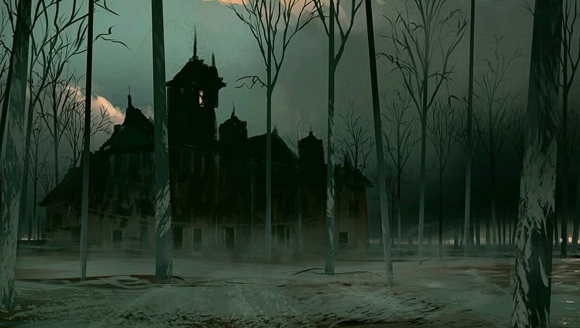

La casa de los fantasmas
La gran mansión de los fantasmas le pertenece al temible conde Mortarion. Gracias a su dinastía,
"El Panteón de los Difuntos" se volvió uno de los sectores más visitados gracias a la enorme relevancia de la mansión y del mismo Mortarion.
Actualmente, Mortarion ya no se encuentra en Halloweentown, pero gracias al gran Señor Calabaza se mantiene la esperanza de que vuelva el gran conde Mortarion para asombrarnos nuevamente con su temible figura.
Visitas guiadas
La mansion ofrece visitas guiadas que permiten a los visitantes conocer la historia del sector y susmonumentos.
